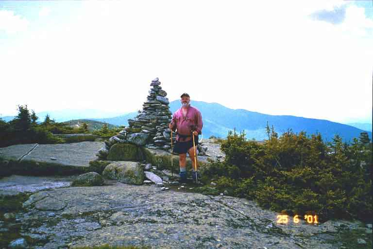
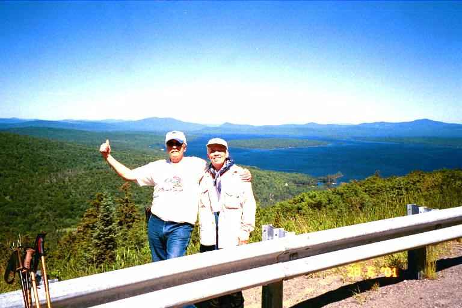
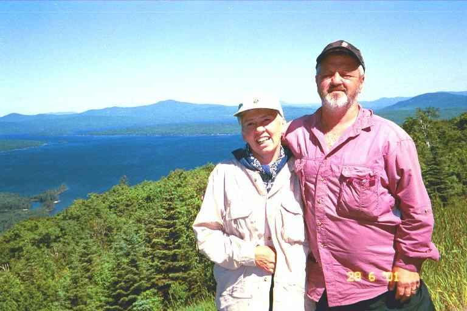
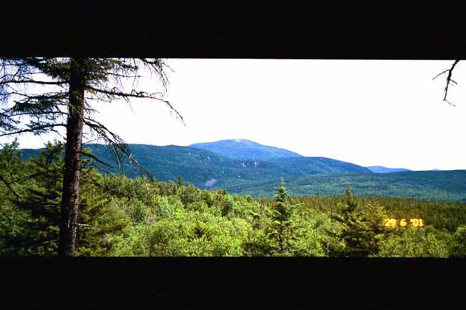
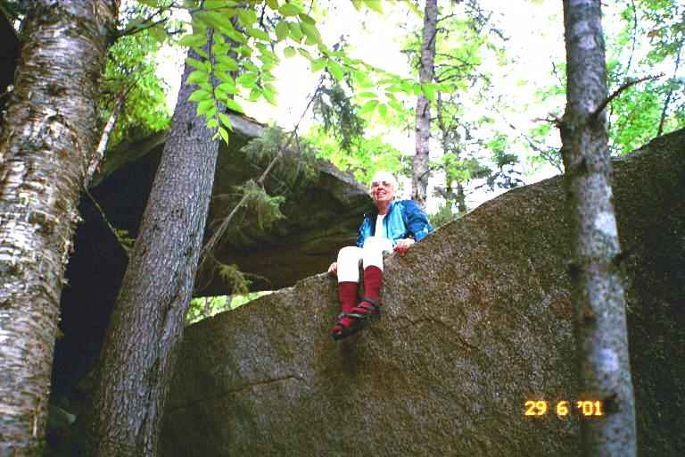
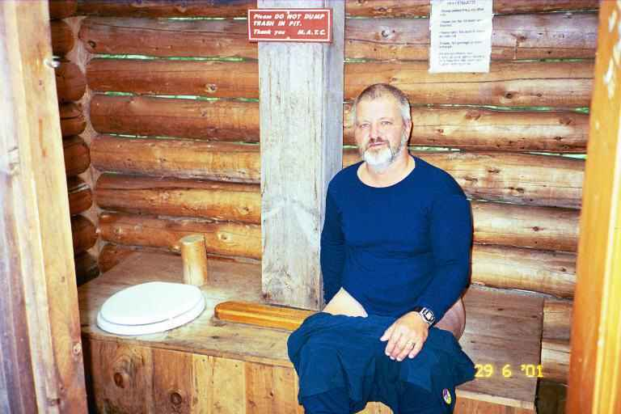
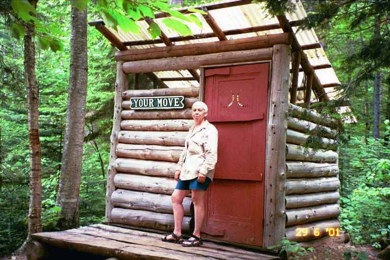

We went back to the trail in 2001 to try and do the last 270 miles. We would be starting where we left off, at Grafton Notch where the trail crossed state Route 26 in Maine. We had contacted Ilene and Paul at Pine Ellis Bed and Breakfast in Andover (where we stayed at the end of last year's hike) and arranged for a room.
On June 24, our son-in-law George drove us to Pine Ellis. We were warmly greeted by Ilene and Paul. Addie's Restaurant was closed so we had a sub at the corner store and went to bed early. The next morning Paul prepared his famous omelet breakfast for us and two SOBO young men named STICKS and STONES.
We had previously arranged for Paul to slackpack us for the first two days. Our study of the maps showed that both days we could be dropped off at one road in the morning and we could hike a little more than 10 miles to the next road to be picked up late in the afternoon. We could do this with only our fanny packs (the lids from our backpacks) and leave our backpacks behind. We felt it would be an easy way to get used to the trail again.
A minor concern with slackpacking would be that we would only have food and water and a few emergency items with us and would not be ready for every eventuality. We had no choice but to do the entire 10 miles as there were no other roads and we were not equipped to spend the night. We were not really worried however because it was hot and sunny.
In fact it was unseasonably hot when Paul let us off at Grafton Notch at 9:20 in the morning on June 25. The trail started climbing almost immediately and we walked 2.5 miles, rising 1200 feet, stopping after nearly an hour and a half at the Baldpate Lean-to. We wanted to see our first shelter so we walked the extra 200 yards uphill from the trail to the shelter.
After break, the trail got much steeper as we climbed more than 1000 feet over a distance of 1 mile, taking us nearly an hour to reach the West Peak of Baldpate Mountain. We stopped here for lunch on the mostly bare summit (the map indicated that we were above treeline). We enjoyed the strong breeze blowing over us.
As we ate, we took in the view. Ahead of us, was the slightly higher East Peak about a 1 mile walk away across a steep gap. From where we sat, it was hard to figure out which way the trail would take to get up the peak. It seemed very steep and was bare rock on the left side and what seemed to be a wooded area of stunted trees on the right.
We started down the dip and then began climbing the steep ascent up the bare rock on the left side of East Peak. It consisted mostly of large sloping slabs of bare rock, with the way marked with small rock cairns. There were a few dayhikers on top of the mountain. It took about an hour to get to the peak where we stopped for a picture next to the large cairn at the 3800 foot summit. Behind me was the West Peak, and also Speck mountain, and way off in the distance, we thought we could make out Mount Washington. The view was great as we looked back towards the White Mountains.

The way down was very steep on more rock slabs with cairns leading to a steep rocky trail. It took us about an hour to do the first steep 0.9miles (dropping 1300 feet). Then we speeded up as the trail flattened slightly and we did 0.8 miles to the Frye Notch Lean-to in half an hour. We filtered water at the brook in front of the shelter as we had actually run out of water. During this segment we met two thru hikers named CAPTAIN and THE OTHER DUDE.
From the shelter, it was a short steep half hour hike to the top of Mount Success, where we arrived at 3:00. We had only done a little over 6 miles and we still had 4 miles to do but we were not worried as the map showed the rest of the way as mostly down hill. The first 3 miles or so were kind of treacherous because of lack of maintenance. There were very few blazes, the trail was overgrown and there were many downed trees impeding our way. We eventually heard the sound of rushing water in the distance and we came to a large mountain stream which we had to ford. Far to the right we could hear the stream as it tumbled down a couple of high waterfalls into a gorge. The Cascade Trail lead down through the gorge but we decided to stay on the AT as we were tired and Paul would be waiting for us.
Beyond this point the trail was very nice as it was obviously used by dayhikers making a loop to view the gorge and falls. We finally crossed a small stream and went up a small rise to East B Hill road where we found Paul waiting for us with a container of ice cold lemonade. He gave us his usual "Hi Kids" greeting. It was 5:30 pm.
After a much needed shower, we had supper at Addie's (Ilene had called them and asked them to stay open a little longer to wait for us) where we met a number of hikers. Then we retired early to bed to watch a little JunkYard Wars and get some sleep. It was a hot night.
The next day was a little over 10 miles from East B Hill Road to South Arm Road. Paul suggested that we do this section from North to South, as it would get two big climbs out of the way early in the morning and would give us a nice long gradual downhill late in the day. We examined the map and agreed. This would be the first section that we would do in the opposite direction.
After a breakfast of French Toast, fruit and treats, Paul drove us to South Arm Road where he dropped us off at 9:00. He gave us each a grapefruit to take with us. It was another very hot day and we immediately started climbing. The walking was tiring but the footing was good on a wooded path winding its way up the mountain. After 30 minutes we came upon our first moose of the trip. He moved off the instant he saw us. We stopped for a break at top of first hill (Moody Mountain). We had gone up 1000 feet in about a mile.
We then had a long steep descent to Sawyer Brook where we had trail mix at around 11.20. Even though we had not been gone long, I decided to filter water to top up our bags because of the heat and the possibility of having dry water sources as we climbed. Also the heat was getting to us and we had so far only done 1.8 miles.
After a the break, we commenced the steep climb up Wyman Mountain. It was tough going. At around 11:50, MA got some kind of energy problem. She just collapsed exhausted, unable to go on. She could not eat, but managed to drink some juice that we had brought with us. As we sat there, a day hiker arrived from the other direction. He had done the nearly 8 miles from East B Hill road (our destination) in about 4 hours. It was not very encouraging when we considered that we had done about 2 miles in 3 hours.
We finally got climbing again and stopped again at 12:30.and had sardines. This seemed to help MA a little, and we continued our climb. Part way up the mountain, the terrain leveled off and we arrived at Hall Mountain Lean-to at 1:30. That was 4 miles in 4.5 hours. I walked down to the nearby stream and we relaxed at the shelter until 2:00. The trail then resumed its climb of Mount Wyman and we reached the highest spot around 2:45 at the 5 mile point. We had only 3 3/4 hours to do the more than 5 miles to our pick up spot.
As we started the long gradual descent, MA picked up her speed and I had trouble keeping up to her. We did the 3 miles to Success Pond in 1.5 hours. At the Pond, we stopped to talk to CHAZ, a NOBO thru hiker who started on March 1 at Springer Mountain. After 10 minutes of trail talk we were on our way again and did the last 1.9 miles to East B Hill Road in less than an hour.
We sat at the side of the road and waited a short time for Paul who soon arrived with the lemonade. On the drive back, Paul mentioned that he could slackpack us the next day but that it would mean hiking 13.3 miles from South Arm Road to State Route 17. When we got back , we showered, had supper at Addie's and then studied our maps. If we slacked the next section of trail, it would involve one big climb upon starting, followed by lots of ups and downs, and ending the day with a steep descent and a short steep climb to the road. There were no roads through this section so we would have no choice but to do the whole thing and the heat was still oppressive. On the other hand, there was lots of daylight this time of year and it would be nice to put another 13 miles under our belts without our backpacks. We decided to try it.
The next morning after breakfast, Paul gave us each a grapefruit and we made sandwiches with some sliced meat that Paul offered us. He loaned us a couple of day packs which would be more comfortable to carry than our fanny packs and then drove us to South Arm Road. We got on our way at 8:30 am, setting a tentative pick up time of 7:00 pm.
We started climbing Old Blue immediately. We soon met two male SOBO's who asked about Andover and accommodations, etc. We told them where we were staying and the slackpacking. They said they had a cell phone and would try to call Paul. We then met a SOBO couple named TWINKLE TOES and GIGGLES. We stopped and talked and they told us how great a time they were having.
It was very hot and tiring as we went back and forth along the switchbacks and we had a view of the wooded territory below and beyond as we went up. By 9:15 we had to stop and shared a grapefruit. We kept climbing and were passed by a some young day hikers. By 10:30 I was exhausted and we stopped and ate some of our sandwiches. All morning the trail had been a wooded path which wound its way up the mountain. We sat on the edge of the path and looked out over the wooded vista below as we ate.
At 11:00 am we reached the summit of Old Blue. We had climbed 2200 feet over a distance of 2.8 miles. The descent was much more difficult than the other side. Much of the path was straight down and much eroded. We found ourselves hanging on to branches and trees as we went down, We had to watch our footing as there were lots of exposed roots. The trail leveled off a little and we walked along bog bridges through a boggy area. We were very low on water but we could find no suitable place to filter. If things got really bad, we would not hesitate to filter this dark water.
Finally we came upon a stream around 12:10 and we stopped to filter water. we had sardines and made some Gatorade. The next section had lots of ups and down and there many exposed roots. We took a break at 1:35 at the 6 mile mark and shared the second grapefruit. We were hot and tired.
During the afternoon the path went through thick wooded areas with soft dark earth and lots of moss. The trail was worn deep into the ground by the foot traffic. In a number of placesWe saw clothes laid out on rocks or on the high ground next to us. I wondered if someone was having trouble, but MA figured it was likely trail maintainers who had removed some clothes in the heat and had forgotten them.
We met 3 thru hikers going south. One was a SOBO hiker named TERRY who had done a NOBO thru hike in 1998. The other two were NOBO hikers who were slacking south in this section.
We went over the West and East Peaks of Bemis Mountain and stopped for sandwiches at 3:00. It was still very hot. We went over the Third Peak of Bemis and finally came to Bemis Lean-to 3:40 It was a little off the trail but we went and took a short break and used the privy. We met a SOBO and CHAZ who would both be spending the night here.
We left just after 4:00 pm with 4.6 miles to go. The trail again had lots of roots but we finally came to a flat exposed rocky area which was the Second Peak. Here we followed blazes painted here and there on the rocky surface at our feet. At around 5:00 we sat on the flat rocky surface and had a break. Less than 3 miles to go. Far below was a green wooded valley which we would have to cross and beyond that was a heavily wooded mountain. Part way up the mountain, we could make out a road which we assumed was our destination. As I got up, I noticed that I had placed my pack down on my hose, and that I had lost some water. We were not too concerned because we did not seem to have too far to go.
We then dropped down into the woods and a short time later we rose up to another flat rocky spot (First Peak ) from where we got a better view of the next mountain and of the road cutting across it. From our viewpoint, it appeared that we descended off this mountain, we would be crossing a heavily wooded valley and what looked like a railroad track and dirt road. We would then go part way up the next mountain to our destination. I sort of envisaged this last climb as being similar to climbing from a ditch up to the road. As we looked more closely across the valley, we thought we could make out Paul's vehicle. It gave our tired bodies a boost but we knew we had some tough walking still ahead of us but there were only 2 more miles to go.
It was a tough descent down the mountain. In many places there was no path and we had to find our way down small ledges, hanging on to trees, etc. We then discovered that we were both out of water but the terrain flattened out and I kept thinking we would soon be coming to the railroad track and do the little ascent to the road. Finally we came to a dirt road and railroad track which we crossed. It was now 6:20 and it was still unbearably hot and we were thirsty. I was getting tired.
We started climbing to the road. We came to a dry stream bed which we crossed. We then came to a little river but I did not dare filter water as I was swarmed by mosquitoes. They were relentless in their attack, and made me push on. I started to get really tired and stopped on a tree stump to take a break and eat my last nutrigain bar, while MA kept on going. Mosquitos were still hanging around me. I finally got up and walked a little further and stopped again. I was completely drained of energy. I knew the road could not be too far ahead, but I did not know how I would get there. I was now resting every few minutes and MA was out of view.
Then the trail got even steeper and I assumed we were approaching the road. I kept calling up to MA who would update me on her position. This was more than the little climb I had envisaged. Finally she told me she had arrived. About 5 minutes later I struggled to the top and headed to sit on a large rock at the side of the road. It was 7:10. Paul gave me a big smile and brought over a big glass of lemonade and a bag of salty potato chips. I did not move for about 10 minutes. I just drank and ate. I eventually got up and made my way to the car.
It was about a 30 minute drive back to Andover. The two SOBO's with the cell phone were also staying at Pine Ellis. They had called Paul in the morning and he had picked them up. He then slacked them for the section from South Arm to East B Hill. We ordered pizza and went to bed early as I was really tired and wanted to be ready for our first day with our backpacks.
After another big breakfast, we waited for Paul to return from driving the other two hikers back to the trail and then we were off. Paul let us off on Route 17and we took a couple of pictures at the side of the road overlooking lake Mooselookmegu. Picture 1 is Paul and MA and Picture 2 is MA and PA.


At 10:20 we were on our way. It was sunny and not quite as hot so the walking was easier that morning and the trail only had a few little dips and rises. We took a break around 11:10, mostly because it had been a long time since breakfast.. We went by Moxie Pond and over Bates Ledge before contouring above the northern edge of Long Pond. We had lunch on a sandy beach at the eastern end of the pond. It was very windy and the water looked a little choppy so I did not venture in. It was a very short walk from there to Sabbath Day Pond and the Lean-to there. This pond was calmer and I filtered water.
We left at 12:45 and arrived at our destination, Little Swift River Pond Campsite, at 4:45. On the way we met two hikers with a dog who were going the other direction. They were only out for that night. The walking had been pretty good, with a few gradual ascents and some boggy areas with pungeons (bog bridges). All in all, a good 8.3 mile day. The campsite was very nice. Many camping spots had been cleared and there was a relatively new privy. We set up our tent and I walked down to the pond to filter water from the stream that ran into it.
I filtered next to a canoe that we could use to go out on the pond. It did not tempt me as I felt a little chilled. It was warm out but there was a little breeze and I was damp from the day's exertion. The sun had disappeared behind the mountain and the area was fairly wooded. I then went back to our site, put on a fleece and prepared supper while MA prepared the tent for the night.
MA was cleaning the dishes after supper when I started to shiver. I felt cold and damp and was very uncomfortable. I could not figure out what the problem was, since it was still warm out. I then started to get heart palpitations and got very tense. I wondered what was going on. I did not know what to do. It seemed likely that this was nothing serious and in any event we were nearly 5 miles from the nearest road and it was too late to leave. Also there was nobody else here.
I decided to retire for the night even though it was still quite early. I put dry clothes on, got in my sleeping bag and bundled up nice and warm. MA also came to bed. I lay there shivering with my continued pounding pulse. After a short time, I fell asleep. I awoke at 10:00 pm feeling much better. I eventually fell back to sleep.
We awoke around 1:45 am with the sound of foot steps outside. We immediately knew that it was moose and we got concerned that we would be stepped upon. I finally got brave enough to check outside. I zipped open the tent and then unzipped the fly and checked outside with my flashlight. There was nothing but I could hear the sound close by. I got back into the tent and had a fitful night waking often to hear the moose still hanging around. He went away around 4:00 am.
I was not feeling too great the next morning, but I figured it was my normal morning problems on the trail. It was sunny with some clouds and not as hot. The walking was good with slight ups and downs. We did the 4.3 miles to highway 4 in less than 3 hours, emerging at the trailhead parking lot at 11:15 am. We sat at the edge of the parking lot and had a snack as we watched the comings and goings. The two overnight hikers arrived and got in their vehicle.
After a short rest, we crossed the highway and took a picture of the terrain we had traversed over the last few days. Old Blue is in the middle of the picture.

Then we were on our way again. Our goal was Piazza Rock Lean-to which was only 2 miles away. We did not want to go any further as the maps showed the next possible site to be 9 miles beyond that on the other side of Saddleback Mountain. Because the lean-to was so close to the road, the trail leading to it was wide and well traveled. We first crossed a foot bridge and then started a gradual climb. At that point, we saw our second moose of the trip. He was standing on the trail, not far beyond the bridge and did not move until we made noise.
It was an easy uphill walk through high canopied woods to the lean-to. It took us about an hour to do the 2 miles. We were greeted by Jesse, the young caretaker, who explained where the campsites and lean-to were located. It was a large beautiful area with a stream running through it. We could tell by the facilities that this was a popular spot, although there was nobody here when we arrived.
We decided to stay in the lean-to, and proceeded to set up in there. We relaxed here for awhile and I tried to get some rest to see if I would feel better. During the afternoon, a number of people dropped by including a family with two young children and a group of young people who were returning after spending the day climbing Saddleback Mountain.
We investigated Piazza Rock which was located not far from the lean-to. It is gigantic rock ledge protruding far out of the hillside. We took the attached picture. There was an interesting privy not far behind the lean-to and we took a couple of pictures, both inside the privy and outside.the privy.



Late in the day we were joined by an older hiker name POPPA POW POW. He has been doing the trail for 29 years in sections, and had just got on the trail to do this year's section. He planned to hike for about two weeks. His wife was not a hiker and was a little apprehensive about his annual treks. His children or a friend usually came with him but he was alone this year.
He was very glad to see us because he wanted someone to hike with him over the next little while. He said he was a very slow hiker and we said we were not very fast either. We talked about equipment and food and other hiker topics. His pack was very large which likely explained his slow speed. He was a perfect example of the vicious cycle of pack sizes. His slow speed meant that he had to carry more food and fuel which in turn increased the weight of his pack which slowed him even more. I was amazed at the amount of food he said he had in his pack. He did not seem to mind carrying it all. He was happy to be out here and speed was not a concern.
We made supper and did our evening chores and I started to feel chilled again. I was very uncomfortable. We then checked our food. We determined that we likely had sufficient snacks and trail mix to get us to the next road crossing in four days but that we were perhaps short one meal and would only have Ramen one night. The uncertainty about the food, the fact that we would be away from civilization for four days and the way my body felt seemed to heighten my apprehension and I felt even worse. I got into my sleeping bag early, and read a little before going to sleep.
The next morning I got up not feeling much better and unsure if I wanted to go on. We had breakfast and packed our stuff. MA and I discussed our situation and decided to go on a little and see how the terrain was and how I felt. We told POPPA of our plan and said goodbye to him. We were on our way and began climbing almost immediately. We went on for over an hour and the entire time I was thinking about whether I wanted to go on. Finally I made the painful decision to turn around. I felt that perhaps a few days off would be good and that we could hitch up ahead to the next road crossing. On the way back down we came upon POPPA POW POW slowly climbing up the trail. We told him of our decision and that we would perhaps see him further up the trail.
When we got down to the road, MA said we should just quit for this year and try again next year. I agreed.
We managed to hitch a ride to Rangeley, and found out there is no bus or other transportation around this area. I called Pine Ellis and Irene sent Paul to come and get us. Ilene made inquiries before we got there and found out that there is one bus per week from Maine to New Brunswick and that it was the next day.
We ordered more of the great pizza that night at Pine Ellis and we arranged for Paul to drive us to Lewiston the next day to catch the bus. When we got on the bus at Lewiston we were greeted by a young couple who had seen our backpacks. They had been thru hiking the trail but had to get off because of a foot problem. They had made it from Georgia to West Virginia. They were now on their way home. They were very disappointed but said they had had a great time. We exchanged trail stories.
In Bangor we transferred to the New Brunswick bus and our daughter and kids picked us up at the bus station in Moncton. Another year of AT hiking was officially over.